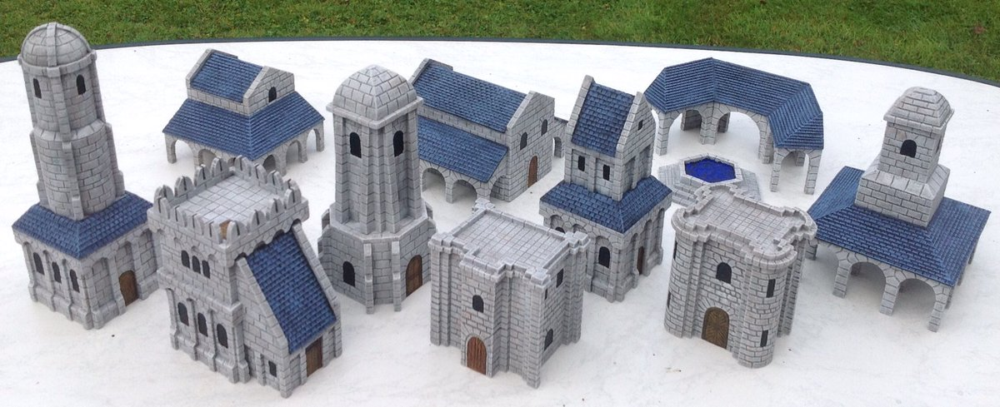

Indice
Los ciudadanos de Minas Tirth al estar en constante amenaza de las incursiones de los Orcos de Sauron, realizan sus actividades
al interior de la ciudad. Según Tolkien, los círculos en su interior dejaban un amplio espacio para la calle principal y uno o más callejones, con un mínimo de
dos hileras de casas.

Las funciones de cada edificio y las actividades que allí se realizan son:
La Ciudadela:
El sitio más alto de la Ciudad de Minas Tirith, ubicada en el Séptimo Círculo de la Ciudad. Allí se alzaba la Casa del
Rey, la Torre Blanca, la Plaza del Manantial, la Casa de los Huéspedes y Merethrond, además de otras edificaciones que
servían para uso de la Compañía de la Guardia. Se llegaba después de trasponer la Séptima Puerta; que estaba
"(...)rodeada de muros lisos, columnas recias, y la cabeza majestuosa y coronada de un rey esculpida en la arcada..."
La Tronera:
En el espolón oriental de la Colina de la Guardia en el círculo, donde se ubicaba la muralla de la Ciudadela, se
encontraba esta abertura, sobre un antepecho almenado desde donde se podía ver gran parte del reino de Gondor. Era el
lugar preferido de Pippin y Beregond, después de que dejaban el turno del servicio, para descansar y conversar.
Las Caballerizas:
Estaban ubicadas en el Séptimo Círculo de la ciudad de Minas Tirith, fuera de la Ciudadela. Allí se encontraban también
las habitaciones de los hombres que oficiaban de Correos del Senescal. Muy bien alimentado y cuidado se encontraba en
ese lugar Sombragrís, el mearh.
Las Casas de Curación:
Se trataba del lugar en la ciudad de Minas Tirith en donde se atendían a los enfermos y a los heridos en la batalla. Se
encontraban cerca de la Ciudadela en el Sexto Círculo de la Ciudad, casi lindando con el muro Sur. Estaba rodeada de
jardines y de un prado arbolado. Allí fueron atendidos de sus graves heridas Faramir, Éowyn, y Merry por las manos
habilidosas del rey Elessar (Aragorn), quien con la ayuda de las Athelas, salvó la vida de estos héroes.
El Cementerio de Reyes y Senescales:
El Cementerio también se encontraba en el Sexto Círculo de la Ciudad y era el lugar donde estaban las tumbas de los
reyes y de sus senescales. Estaba ubicado en la angosta lengua de tierra que comunicaba los precipicios del Mindolluin
con el sexto muro. Para llegar allí se trasponía una puerta en la parte posterior de ese muro, llamada Fen Hollen, luego
seguía un sendero flanqueado de muros y balaustres, desembocando en Rath Dinen. Allí, entre cúpulas y estatuas de
muertos importantes, se encontraba, entre otras, la Casa de los Senescales, casa mortuoria.
Fen Hollen:
La “Puerta Cerrada”, llamada así porque solo se abría para los funerales; y podía usarla solamente el Señor de la
Ciudad. Estaba custodiada por la Guardia de las Tumbas, que guardaban, también, las moradas de los muertos. Por allí
llevó Denethor II a su moribundo hijo Faramir para cremarlo junto a él y allí, Beregond luchó y mató al Guardián, para
posibilitar su paso y el de Pippin, en su intento de salvar al segundo hijo del Senscal de Gondor.
Rath Dínen:
Rath Dínen, la ‘calle del silencio’, una ancha y larga calle que «entre cúpulas pálidas, salones vacíos y efigies de
hombres muertos en días lejanos», atravesaba el cementerio de reyes y senescales.
Casa Mortuoria de los Senescales:
Se trataba de un larga cámara de techo abovedado, decorada con tapices, sudarios y estatuas de los Senescales muertos. A
todo su largo había numerosas hileras de talladas mesas de mármol blanco, en donde se depositaban los cadáveres, a los
que se colocaba completamente vestidos con todos sus ornamentos, con los brazos cruzados en el pecho y la cabeza apoyada
en una almohada de piedra blanca. Allí se inmoló Denethor, en una pira hecha sobre la que hubiera sido su mesa
mortuoria. El incendio, que pronto cubrió toda la Casa, provocó el derrumbe de ésta.
Hostería Vieja:
Ubicada en el Primer Círculo, de la ciudad, sobre Rath Celerdain, la Calle de los Lampareros. Se trataba de un edificio
de piedra con numerosas ventanas y dos alas laterales, con un pequeño prado al frente, la fachada estaba ocupada por un
pórtico sostenido por columnas, además de una escalinata que descendía hasta la calle.
En tiempos de paz era un lugar de hospedaje para viajeros; pero en tiempos de la Guerra del Anillo, se alojaban todas aquellas personas que cumplían funciones varias para los soldados pues la ciudad había sido evacuada de todos sus habitantes. Fue el lugar en donde Pippin se encontró con Bergil, el hijo de Beregond.
En tiempos de paz era un lugar de hospedaje para viajeros; pero en tiempos de la Guerra del Anillo, se alojaban todas aquellas personas que cumplían funciones varias para los soldados pues la ciudad había sido evacuada de todos sus habitantes. Fue el lugar en donde Pippin se encontró con Bergil, el hijo de Beregond.
La Gran Puerta:
La Gran Puerta o Puerta de Minas Tirith se ubicaba e el extremo oriental del Muro del Primer Círculo de la Ciudad, es
decir del Muro Exterior. Se trataba de dos enormes batientes forjados en hierro con montantes de acero tomados en el
muro y custodiada por dos altas torres a cada lado y bastiones de piedra sobre la muralla, que era extremadamente alta y
muy sólida y construida con una piedra dura y lisa, como con la que estaba construida Orthanc. Una Guarnición completa
se encargaba de la vigilancia y del movimiento de la Puerta. En el lado externo, había garitas de custodia y un amplio
espacio pavimentado a donde llegaban todos las rutas a Minas Tirith. Del lado interno había una plaza justo detrás de la
Gran Puerta y una calle ancha, Rath Celerdain, recorría toda la muralla y conducía hacia la puerta. Después de su
destrucción fue reconstruida en acero y mithril, al inicio de la Cuarta Edad.